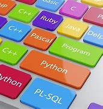
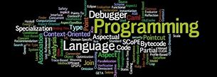
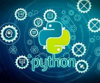

PyNews
Here to provide you with the most recent, related Python News and deals
PyHub
Official Python Website
PyPI
RealPython
PyCharm
People and Python in AI
Python top programming language in new survey – what happened to JavaScript? • DEVCLASS
Microsoft is bringing Python to Excel
Making Sense of Algorithms in Python | by The Python Lab | Sep, 2023
Introducing Immortal Objects for Python - Engineering at Meta
Python Engineer Skills: What You Need to Know
How to Install Python-SocketIO in Stable Diffusion (Guide)
History of Python programming language
__init__ vs __new__ Methods in Python
How To Download Python For Mac
Python is 57x slower than C++ (and 45x worse for the planet)

A first look at the Mojo language
Linux Fu: C On Jupyter
How to learn Python with ChatGPT

This New Programming Language is Likely to Replace Python
MIT Turbocharges Python’s Notoriously Slow Compiler
Developer Q&A: Pablo Galindo Salgado Talks Python's Speedy Future
10 Simple Steps to Learn Python Programming
Python-based compiler achieves orders-of-magnitude speedups
How to Use ChatGPT for Python Programming
Python Assignment Help
Pass vs. Continue in Python Explained
Programming languages: How a team of developers at Microsoft are helping make Python faster
Top 10 Features of Python Programming Language

Learn the Python programming language online for just $30
Python Certifications: Do They Exist? Are They Worth Earning?
What are the Benefits of Learning Python Programming Language?